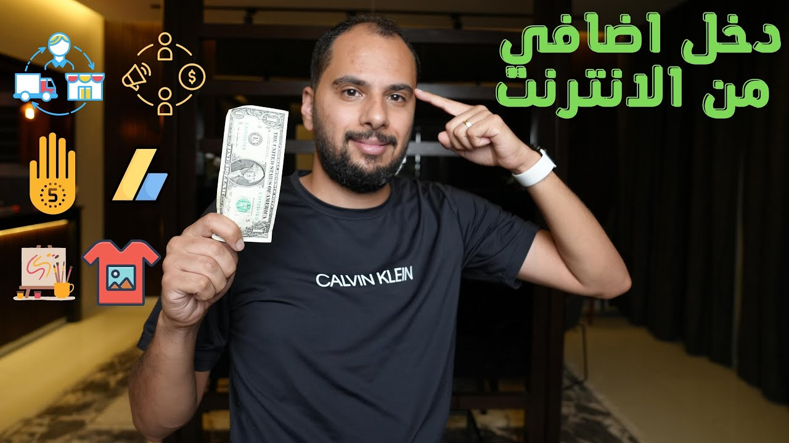

شغل ودخل إضافي
6 أفكار لبدأ عمل اضافي من خلال الانترنت
أول دولار كسبته من الإنترنت كان من كتابة المحتوى. هنا 6 مجالات لعمل إضافي على الإنترنت، من مشاركة أرباح Google AdSense لطباعة التيشرتات، ومع كل مجال إيه اللي محتاجه عشان تبدأ، وفي الآخر نصايح عشان تستمر.

شغّل الحلقةفي الحلقة اللي قبل دي قدّمت نصايح للتعامل في أوقات الأزمات، وكان من ضمن النصايح دي إنه لازم يكون عند كل واحد فينا عمل إضافي. مش بس عشان نأمّن لنا دخل إضافي، لأ، عشان نفتح لنفسنا فرص أكتر.
وفي المقال ده هقدّم لك 6 أفكار لبدء عمل إضافي من خلال الإنترنت.
قبل ما تبدأ: إزاي تختار المجال اللي يناسبك؟ 0:37
في خلال الـ10 سنين اللي فاتت كنت متفرّغ تمامًا للعمل على الإنترنت، واكتسبت فيهم خبرة كبيرة في أكتر من مجال. وارد تكون بعض الأفكار دي مكررة بالنسبة لك، فلو مش عاوز تقرا المقال كله، اقرا على الأقل الجزء الأخير، لأن فيه نصايح هتساعدك في النجاح على الإنترنت بشكل عام، وهي نتيجة خبرة 10 سنين.
وآخر حاجة عاوزك تعرفها قبل ما نبدأ: ترتيب الأفكار والمجالات هنا عشوائي. أنا مش بفضّل مجال عن مجال، لأن ببساطة اللي هيناسبني مش هيناسبك. فخد فكرة عن المجالات اللي موجودة، وابتدي باللي يناسبك.
الربح من كتابة المحتوى: إزاي تكسب من Google AdSense؟ 1:28
أول دولار حققته من الإنترنت كان في المجال ده تحديدًا. وقتها كانت هوايتي الكتابة، وعرفت إن أنا أقدر أعمل مدوّنة أشارك فيها أفكاري، ولما عملتها اكتشفت إني أقدر أضيف فيها إعلانات وأكسب منها فلوس عن طريق برنامج Google AdSense. وفعلًا جرّبت، لكني ما حققتش أي أرباح، لأن ببساطة ما كانش عندي زوار، وما كنتش فاهم إزاي أجيبهم، خصوصًا إن المواضيع اللي كنت باكتب فيها ما كانتش بتجذب انتباه الناس كتير.
وبعد شوية من البحث اكتشفت فكرة كانت لسه بادئة في المحتوى العربي: مشاركة أرباح Google AdSense، واللي كان بيقدّمها موقع نجوم مصرية (Nogoom Masrya). الفكرة إنك تنضم للموقع وتكتب فيه المحتوى بتاعك، ولأن الموقع مشهور وكبير وبييجي له زوار كتير، فاحتمال إن الزوار دي تشوف مقالاتك كبير جدًا. وكان الموقع بياخد حوالي 20% من الأرباح اللي إنت بتحققها، وكل ده بيتم بطريقة أوتوماتيكية.1 انضميت للموقع وابتديت أكتب مقالات وأحقق أرباح، وفي خلال سنة تقريبًا بقيت متفرّغ تمامًا لكتابة المحتوى، والمجال ده كان بوابتي لدخول مجالات عمل كتير على الإنترنت.
الربح من المحتوى بيعتمد بشكل أساسي على عدد الزوار اللي بيزوروا المحتوى بتاعك وبيتفاعلوا مع الإعلانات اللي فيه. فلو بتعرف تكتب كويس أو بتنسّق أفكارك بطريقة كويسة، تقدر تبتدي بطريقتين:
- **إنك تنضم لموقع بيقدّم مشاركة أرباح Google AdSense:** وفي الحالة دي مش محتاج إنك تكتب محتوى كويس يجذب انتباه الناس، لأن الموقع بييجي له زوار كتير أصلًا. - **إنك تأسس موقعك أو مدوّنتك:** وهنا هتحتاج تصرف شوية في البداية، والأهم إنك هتحتاج تتعلم إزاي تجيب زوار، سواء من السوشيال ميديا أو من تهيئة موقعك لمحركات البحث. الطريقة دي بتاخد وقت عشان تجيب نتايج، بس لما بتجيب نتايج بتكون مختلفة تمامًا.
وأنا مش بنصح بالطريقة التانية لو ما عندكش خبرة. ابدأ بالأولى، ولما يبقى عندك خبرة ورأس مال تبدأ تأسس موقعك الخاص.
بيع الخدمات على خمسات: إيه اللي ممكن تبيعه؟ 3:35
أي حاجة بتفهم فيها ممكن تحقق منها أرباح كويسة لو قدرت تقدّمها كخدمة وتبيعها على مواقع بيع الخدمات زي خمسات. الفكرة ببساطة إنك تعرض خدماتك مقابل مبلغ بيبتدي من 5 دولار ومضاعفاتها.2 لو بتفهم في الرياضيات وبتحبها، ممكن تعرض خدمة مساعدة الطلبة في فهم بعض المسائل. لو بتعرف تستخدم الـPowerPoint كويس، ممكن تعرض إنك تعمل Presentation. وحتى لو بتفهم في النجارة، ممكن تقدّم خدمة ليها علاقة بمجالك.
وعشان تعرف إيه الخدمات اللي ليها علاقة بمجالك بالظبط، ادخل على الموقع واكتب اسم مجالك: هتطلع لك ناس كتير بتقدّم خدمات في نفس المجال، وهتعرف الخدمات دي عليها طلب قد إيه. ساعتها تقدر تقدّم خدمات مشابهة، أو تدوّر على الخدمات اللي مش موجودة وتقدّمها إنت. وحاول تقدّم أكتر من خدمة علشان تزوّد فرص ظهور خدماتك، وبالتالي فرص بيعها.
وأهم نصيحة أقولها لك في خمسات: خلّي العملاء بتوعك راضيين عن الخدمة اللي بتقدّمها، لأن تقييماتهم هتفرق كتير في بيع خدماتك لناس تانية.
التصميم بـCanva: محتاج خبرة في برامج التصميم؟ 4:44
زمان كان بيتقال لنا: هتاخد كورس Photoshop عشان تشتغل كـfreelancer وتقدّم خدمات التصميم للأفراد والشركات. لكن الوضع دلوقتي بقى أسهل شوية مع ظهور مواقع زي Canva، اللي بيساعدك تعمل التصميمات دي من خلال templates جاهزة، وأدوات هتخليك تطلّع شغل احترافي من غير أي خبرة في برامج التصميم.
من خلال Canva تقدر تقدّم خدمات التصميم بتاعتك على مواقع زي خمسات ومستقل (Mostaql)، وكمان تقدر تعمل تصميمات مبتكرة وتبيعها على مواقع بيع التصميمات. والموقع مش بس بيساعدك تصمم لوجو كرييتيف للسوشيال ميديا؛ ممكن كمان تستخدمه في عمل CV أو Company Profile أو Business Card، أو غيرها من الخدمات اللي ممكن يحتاجها عملاءك المحتملين.
التسويق بالعمولة: إزاي بتاخد عمولة على كل بيعة؟ 5:23
في آخر 8 سنين كنت متفرّغ تمامًا للعمل في مجال الـOnline Marketing عمومًا، وواحد من أنجح قنوات التسويق الإلكتروني بالنسبة لشركتي كان التسويق بالعمولة، أو الـAffiliate Marketing. باختصار، إنت بتاخد عمولة على كل عملية بيع بتتم من خلالك. مثلًا ممكن تاخد منتجات من Amazon وتسوّق لها بلينك خاص بيك إنت لوحدك، وأي حد يشتري من خلال اللينك ده تاخد العمولة اللي محدداها لك Amazon.
ده كان شكل الـAffiliate Marketing قبل كده، لكن بعدها الصناعة أخدت شكل مختلف شوية: من خبرتي في المجال، معظم الشركات في الخليج ومصر استبدلت نظام اللينكات بنظام أكتر فعالية، وهو الكوبونات الخاصة. يعني إنت دلوقتي تقدر تسوّق للمنتجات بكوبون خاص بيك إنت لوحدك، وكل حد يشتري من المواقع دي ويستخدم كود الخصم بتاعك، إنت تاخد عمولة.3
شفت الموضوع بسيط إزاي؟ بس للأسف هو مش بالسهولة دي، لأنك محتاج يكون عندك Traffic Source، يعني مصدر تجيب منه مبيعات. وفيه مصدرين:
- **المصدر الأورجانيك:** لو عندك موقع ليه زيارات كتير، أو جروب Facebook فيه ناس متفاعلة، أو صفحات على السوشيال ميديا فيها متابعين كتير، تقدر تشارك معاهم الكوبون الخاص بيك، ولما يشتروا تاخد عمولتك. - **المصدر المدفوع:** لو ما عندكش حاجة زي كده، هتدفع فلوس لمنصات السوشيال ميديا عشان توصّل إعلانك للمهتمين، ولو اشتروا تاخد عمولتك. والمصدر ده محتاج رأس مال وخبرة كبيرة في الإعلان بكل مراحله، من أول التصميم لحد الاستهداف.
ولما يبقى عندك Traffic Source، أيًّا كان نوعه، هتحتاج تسجّل في شبكات التسويق بالعمولة. الشبكات دي بتقوم بدور الوسيط ما بينك وما بين البراندات أو المواقع اللي هتسوّق لها، وبتوفّر لك أكواد الخصم الخاصة بيك، ومن خلالها تتابع مبيعاتك وأرباحك. ومن أشهر الشبكات في المجال ده شركة ArabyAds، اللي بتدير برامج الـaffiliate لأشهر الماركات ومنصات التجارة الإلكترونية في مصر والوطن العربي.4
الـDropshipping: تجارة إلكترونية بمخاطرة أقل؟ 7:32
التجارة الإلكترونية بتحقق أرباح مهولة، لكنها في نفس الوقت محتاجة رأس مال كبير ونظام زي الساعة عشان تحقق منها أرباح. وعشان كده ظهرت فكرة الـDropshipping، اللي تعتبر تجارة إلكترونية بس بمخاطرة أقل.
فكرتها ببساطة إنك بتختار منتج من اللي شغالة كويس وعليها طلب كبير، وتبدأ تعرضه على مواقع زي Amazon، رغم إنه مش معاك وما بتمتلكوش. ولما ييجي لك مبيعات عليه، بتروح تشتريه جملة من مصدر تاني زي AliExpress أو Alibaba، وتبعته للعميل على البيت، وطبعًا هتكون مطلّع هامش ربح كويس.
لكن كل خطوة من الخطوات دي محتاجة دراسة وفهم كويس. مثلًا لازم تفهم معايير اختيار المنتج الرابح، ومن ضمنها إن المنتج يكون عليه طلب، وفي نفس الوقت ما عليهوش منافسة كتير، يعني مفيش تجار كتير بيعرضوه.
تصميم وطباعة التيشرتات: الموقع بيعمل الباقي 8:30
تخيّل تيشرت محقق أرباح كبيرة جدًا، وصاحبه ما صرفش عليه جنيه واحد: ما اشتراش الخامات، ولا طبع التيشرت. هو ما عملش حاجة غير إنه عمل التصميم ودخّله على التيشرت في موقع من مواقع طباعة التيشرتات، والموقع هو اللي تولّى العملية كلها، من الطباعة والبيع لحد توصيل التيشرت.
الموضوع بسيط في شكله، لكنه محتاج مجهود كبير في البحث وإيجاد تصاميم جديدة تجذب الناس. وبمجرد ما توصل للتصاميم دي، تقدر تدخل على الموقع وتحطها على التيشرت وتبدأ البيع.
نصايح عشان تنجح وتستمر في الشغل على الإنترنت 9:06
دول كانوا 6 مجالات عمل من خلال الإنترنت، تقدر من خلالهم تأمّن دخل إضافي كويس. بس قبل ما تبدأ، فيه كام نصيحة هيساعدوك تنجح وتستمر.
**اتعامل معاه على إنه شغل حقيقي.** معظم الناس اللي بتحاول تشتغل على الإنترنت وما بتكمّلش بتتعامل مع الشغل ده على إنه حاجة كده يا صابت يا خابت. عشان تنجح، لازم تتعامل معاه على إنه شغل ليه وقت مخصص، مش حاجة بتعملها في أوقات فراغك: فرّغ نفسك ساعتين على الأقل في اليوم ما تعملش فيهم حاجة غير الشغل ده، زيه زي أي شغل تاني بتشتغله.
**أوعى تستعجل النتايج.** مستحيل تنجح من أول محاولة، ومش من أول شهر شغل على الإنترنت هييجي لك فلوس. أصلًا ممكن تكتشف بعد شهر إن المجال مش مناسب ليك، أو إنك شغال غلط. ساعتها أوعى تيأس، وخليك عارف إن الشغل اللي مش هيجيب لك فلوس دلوقتي هيدّيلك خبرة تجيب لك أضعافها في المستقبل؛ كفاية إنك فهمت فكرة المجال واكتسبت بعض مهاراته. أنا مثلًا عشان أقدّم الحلقة دي كتبت السكريبت، وفهمت شوية في أنواع الكاميرات، وإزاي أصوّر، وإزاي أخلّي الصوت يطلع بجودة كويسة، وإزاي أعمل مونتاج، وإزاي أتعامل مع المنصات اللي بنشر عليها. فحتى لو ما كمّلتش في المجال ده، أنا اكتسبت مهارات هتساعدني في فرص كتير. ونفس الكلام معاك: أي مجال تجرّبه هتتعلم منه مهارات هتفيدك بعد كده، فإنت كده ما خسرتش حاجة.
**ما تتعاملش معاه على إنه سبوبة.** فيه ناس لما ييجي لها أرباح من الإنترنت بتعمل زي الصنايعية: تشتغل شوية، ييجي لها قرشين فتوقّف شغل، القرشين يخلصوا فترجع تشتغل تاني، وهكذا. والموضوع ده فيه مشكلتين: الأولى إنهم مستحيل يكبروا أو يبنوا حاجة تكبر. والتانية إنهم لما بينقطعوا شوية ويرجعوا، بيلاقوا معالم الشغل نفسها اتغيرت، لأن معظم مجالات الربح من الإنترنت بتتطور بشكل رهيب، والطرق اللي شغالة دلوقتي وبتجيب نتايج، بعد شوية مش هتجيب نتايج. فلازم تكون موجود طول الوقت، ومحدّث نفسك، ومتابع المجال اللي بتشتغل فيه. وعن تجربة، فيه كتير من الناس اللي بدأوا قبلي وكانوا بيحققوا أرقام كبيرة جدًا، ودلوقتي مش موجودين في المجال أصلًا، علشان ما طوّروش نفسهم وما استمرّوش.
**ابني علاقات مع ناس في مجالك.** اتشارك معاهم أفكارك، واتعلم منهم، وفيدهم على قد ما تقدر. تقدر تعمل ده من خلال الجروبات اللي في مجالك على الـFacebook، وكمان احضر المؤتمرات اللي ليها علاقة بمجالك، حتى لو المحتوى اللي بيتقدّم فيها مش هيفيدك بحاجة: روح علشان تقابل ناس جديدة وتتعرف عليهم وتستفيد منهم.
**اهتم بسمعتك.** السمعة بتجيب فرص شغل أكتر من الشطارة، والسمعة هي البراند، ولو عملت سمعة كويسة هتبقى حوّلت اسمك لبراند في مجالك.
وهكون مبسوط جدًا لو شاركتني آراءك وأفكارك في التعليقات على الحلقة.
فصول الحلقة
- 0:37 قبل ما تبدأ: إزاي تختار المجال اللي يناسبك؟
- 1:28 الربح من كتابة المحتوى: إزاي تكسب من Google AdSense؟
- 3:35 بيع الخدمات على خمسات: إيه اللي ممكن تبيعه؟
- 4:44 التصميم بـCanva: محتاج خبرة في برامج التصميم؟
- 5:23 التسويق بالعمولة: إزاي بتاخد عمولة على كل بيعة؟
- 7:32 الـDropshipping: تجارة إلكترونية بمخاطرة أقل؟
- 8:30 تصميم وطباعة التيشرتات: الموقع بيعمل الباقي
- 9:06 نصايح عشان تنجح وتستمر في الشغل على الإنترنت
أسئلة شائعة
إيه هي مشاركة أرباح Google AdSense؟
إنك تنضم لموقع كبير زي نجوم مصرية وتكتب فيه المحتوى بتاعك، والإعلانات اللي على مقالاتك بتجيب لك أرباح. وكان الموقع بياخد حوالي 20% من الأرباح اللي بتحققها، وكل ده بيتم بطريقة أوتوماتيكية.
الخدمات على خمسات بتبدأ من كام؟
بتعرض خدماتك مقابل مبلغ بيبتدي من 5 دولار ومضاعفاتها.
محتاج إيه عشان تبدأ في التسويق بالعمولة؟
محتاج Traffic Source، يعني مصدر تجيب منه مبيعات، سواء أورجانيك زي موقع أو جروب أو صفحات فيها متابعين كتير، أو مدفوع من خلال الإعلانات. وبعدها تسجّل في شبكات التسويق بالعمولة، اللي بتوفّر لك أكواد الخصم الخاصة بيك وتتابع من خلالها مبيعاتك وأرباحك.
الـDropshipping يعني إيه؟
تعرض منتج عليه طلب على مواقع زي Amazon من غير ما يكون معاك، ولما ييجي لك طلب تشتريه جملة من مصدر زي AliExpress أو Alibaba وتبعته للعميل، وتكسب هامش ربح.
أخصص كام ساعة للشغل على الإنترنت؟
لازم تتعامل معاه على إنه شغل حقيقي ليه وقت مخصص، وتفرّغ نفسك ساعتين على الأقل في اليوم ما تعملش فيهم حاجة غير الشغل ده.
المصادر
- ngmisr.com https://www.ngmisr.com/adsense
- khamsat.com https://khamsat.com/
- campaignme.com https://campaignme.com/the-power-of-affiliate-promo-codes-in-the-mena-region/
- boostiny.com https://boostiny.com/